今日，英国全国范围内的大规模骚乱已进入第六天，外媒称，这是英国13年来范围最广泛的暴力骚乱。
在刚刚过去的周末，极右翼势力的骚乱席卷了曼彻斯特、利物浦、赫尔和斯托克等英国多个城市，造成警察局、图书馆被焚烧，清真寺遭猛攻，商店遭洗劫，警察遭袭击……经历骚乱的城市街道布满瓦砾、空中弥漫着黑烟，犹如战后场景。据警方透露，仅在过去48小时，就爆发了56场极右翼或反抗议者的集会，超140人被捕。
昨日，在全英陷入数日混乱之后，首相紧急发表全国性讲话，誓言对极端分子采取法律行动。与此同时，由于事态严重性不断升级，今日英国政府召开眼镜蛇安全委员会紧急会议（英国陷入危机时刻时，通常会举行眼镜蛇会议）。会议决定组建由特种军官组成的“常备军”应对骚乱，以确保暴力事件不再升级。
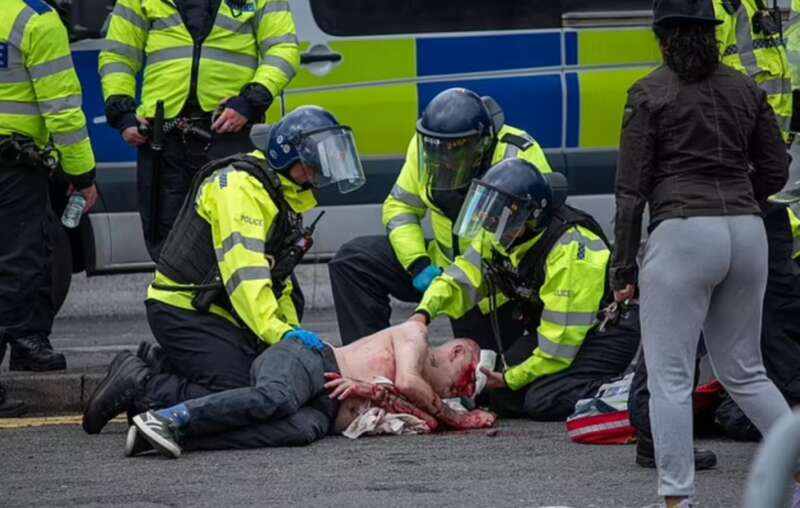
此前，社交媒体X（前身推特）老板马斯克发文称，“英国内战不可避免”。
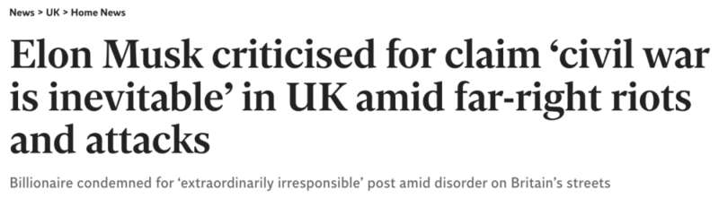
英媒拍摄的画面显示，经历过骚乱的英国多个城市，周日清晨街道上布满瓦砾和灰烬。
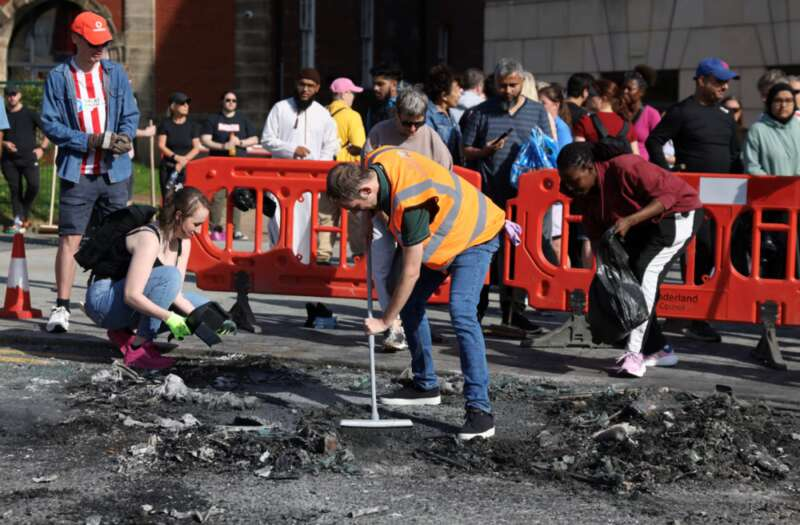
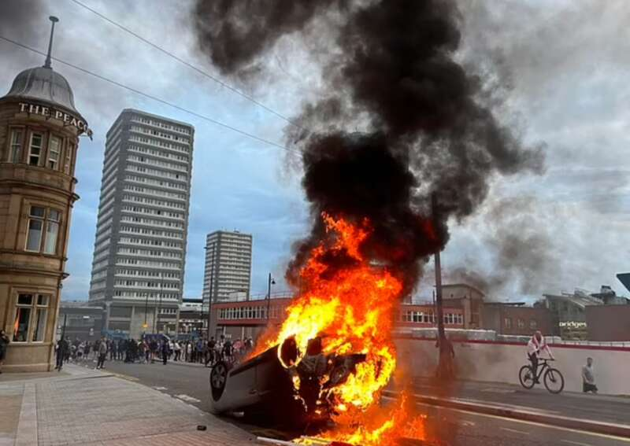
△周五，桑德兰发生骚乱，一辆汽车被推翻并点燃
据英媒报道，8月3日至4日，利物浦、布里斯托、曼彻斯特、贝尔法斯特和南约克等英国多个城市均发生不同规模的抗议活动。
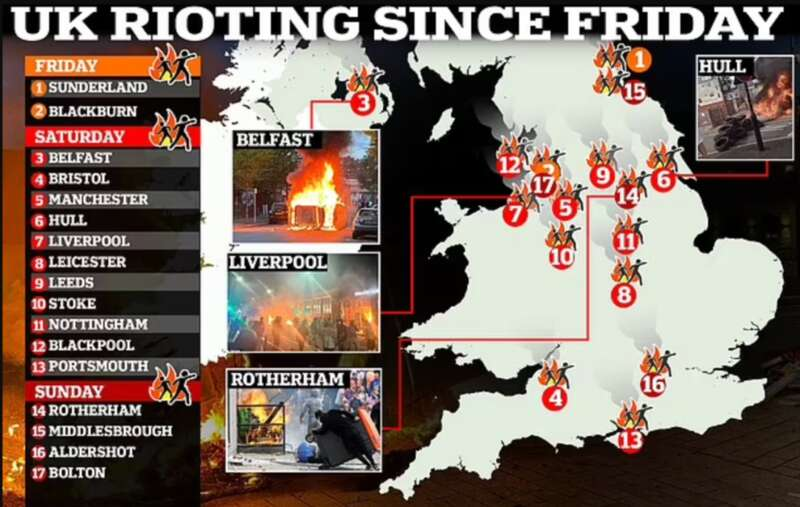
△自周五以来，英国各地骚乱地点
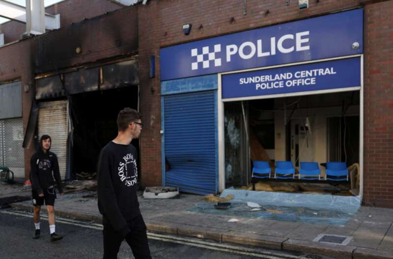
△8月3日，英国桑德兰中央警察局被暴徒烧毁
周六，利兹的示威者挥舞着圣乔治十字旗（极右翼团体经常悬挂英格兰国旗），高喊“穆斯林滚出我们的街道”等辱骂性话语。当地的一座图书馆被焚烧。两名警察遭遇袭击入院。
△8月3日，英国利兹，示威者参加反对非法移民的抗议活动。
在赫尔市，示威者与警方发生冲突，暴徒向一家收容寻求庇护者的酒店投掷瓶子并砸碎窗户。
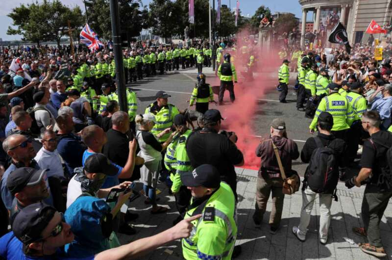
△英国利物浦，警察与示威者在抗议非法移民的活动中对峙。
周日下午早些时候，约100名支持难民的示威者聚集在罗瑟勒姆一家为寻求庇护者提供住宿的酒店外，高呼“欢迎难民来此”，而反对寻求庇护者的团体则闯入酒店，纵火并砸碎窗户。
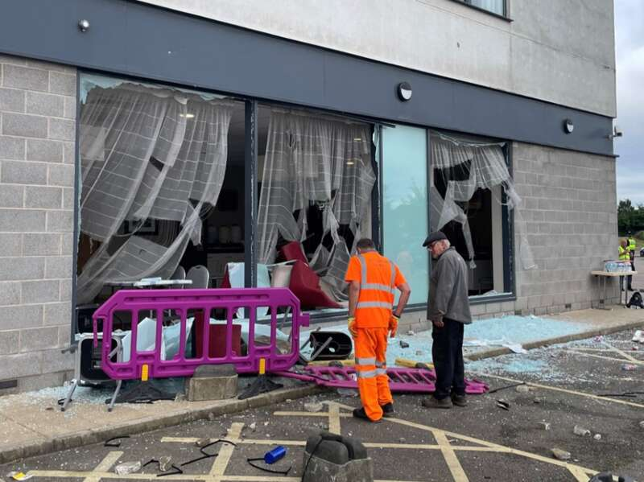
△罗瑟勒姆Holiday Inn酒店窗户被抗议者砸坏
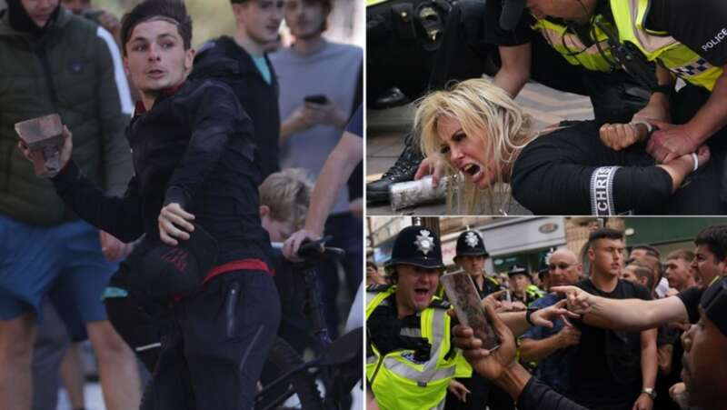
据BBC报道，在控制住骚乱前，手持盾牌的警察曾遭遇过一阵猛烈的袭击，警察被投掷砖块、椅子、灭火器等物品，至少有10名警员受伤，其中一人昏迷。
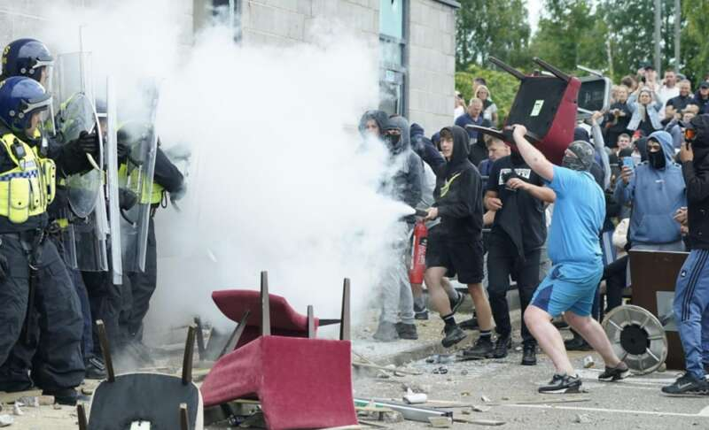
周日，东北部城镇米德尔斯堡的紧张局势也愈演愈烈，一些抗议者挣脱了警察的防守，穿过住宅区，砸碎了居民房屋的门窗和汽车玻璃。

当一名居民问他们为什么要砸窗户时，一名男子回答说：“因为我们是英国人。”数百人在该镇的纪念碑前举着盾牌与警察对峙，向警察投掷砖块、厨具、棍棒。
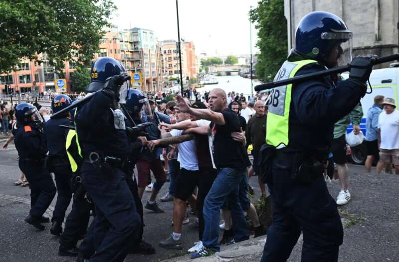
△英国布里斯托尔极右翼示威活动中警察与抗议者对峙

△英国商店遭洗劫
同日，在博尔顿，抗议者投掷大量烟花和烟雾弹，警察努力将敌对的抗议者分离。
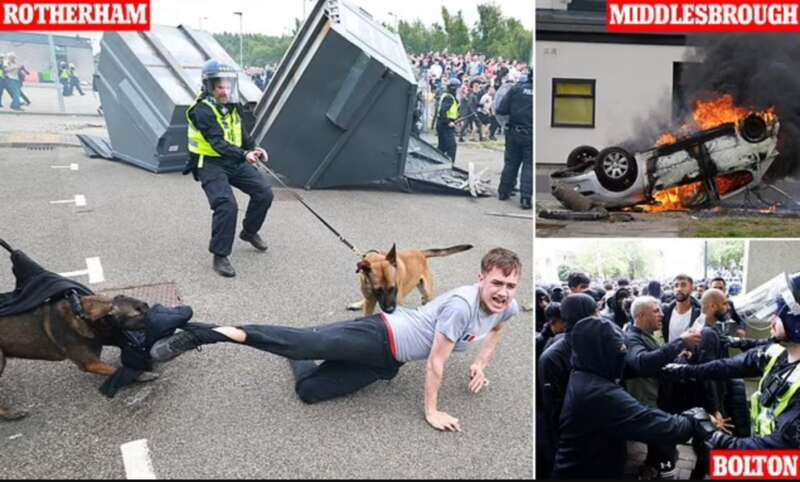
随着抗议活动引发的暴力事件不断升级，英国首相斯塔默昨日发表全国讲话，斯塔默表示，任何因肤色或信仰而针对他人的人都是极右翼。
斯塔默说：“这个国家的人民享有安全的权利，但我们看到穆斯林社区成为攻击目标，清真寺遭受袭击，其他少数族裔社区被针对，街头出现纳粹礼，警察遭袭击，肆意施暴并伴随着种族主义言论，所以，我不会回避将其称为：极右翼的暴行。”
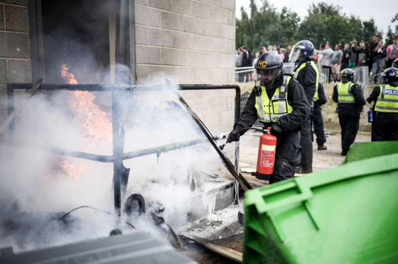
△周日，反移民抗议者在英国罗瑟勒姆的假日酒店外发生骚乱
报道称，这场从上周开始的全国性暴力事件，起初受社交媒体上传播的阴谋论煽动。
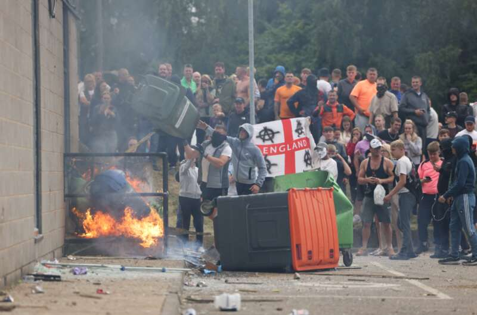
而阴谋论的起因是上周三发生在英国西北部城市绍斯波特的一起“血腥暴力事件”。事发当日，一名年仅17岁的男孩，持刀冲进一家儿童舞蹈班，对课堂上的儿童进行无差别袭击，最终造成三名6岁至9岁儿童死亡，多名儿童和两名成人身受重伤。
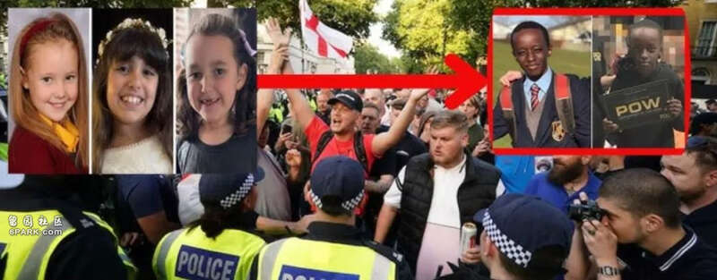
△袭击事件中遇害的三名儿童（左）17岁嫌疑人（右）
随后社交媒体上传播虚假信息，称凶手具有穆斯林身份，是一名寻求庇护者。由此引发了以极右翼团体为中心的示威活动，并逐步升级为全国性骚乱。后经英媒证实，凶手出生于威尔士，父母来自卢旺达。
美媒分析认为，此番全英极右翼势力的暴乱，一定程度上受英国大选后政治形态影响。报道认为，虽然中左翼的工党在大选中取得了压倒性的胜利，但这种左倾倾向与极右翼英国改革党支持率上升相辅相成。
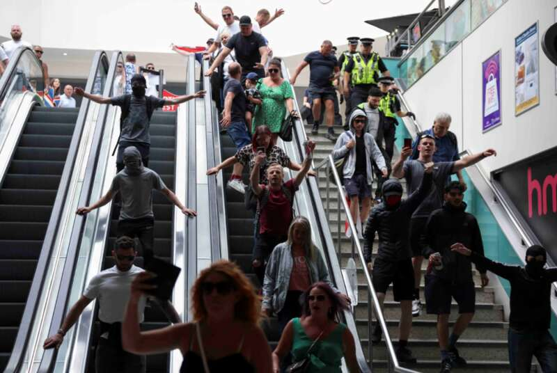
NBC新闻指出，工党的成功至少在一定程度上要归功于极右翼的人气上升，极右翼的人气分散了右翼保守党的选票，导致许多保守党议员在议会中失去了席位。因此，在斯塔默坐上首相之位的背后，仍有一股愤怒而活跃的极右翼暗流在试着发出自己的声音。
此外，另据慈善组织“希望而非仇恨”今年发布的报告显示，去年，英国的激进右翼势力大幅增长，反移民活动比2022年增长了20%，创下历史最高纪录，报告还指出，英国国民的悲观主义情绪日益高涨，近半数受访者认为英国正在走向衰退。
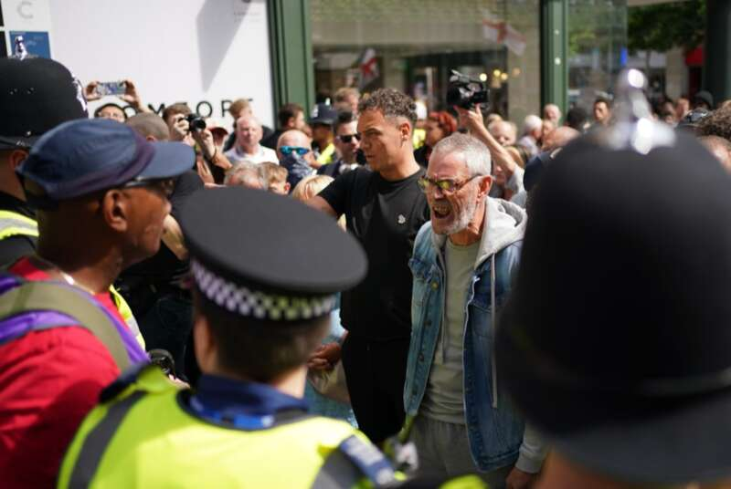
据英媒最新报道，在经历了近一周的动荡之后，马来西亚和尼日利亚成为首批向英国发出旅游警告的国家。
马来西亚外交部周日发布警告，“建议居住或访问英国的马来西亚人远离抗议地区，并保持警惕”。
尼日利亚内政部今早也发布了类似的警告，称“英国最近发生的骚乱导致暴力和混乱的风险增加”。